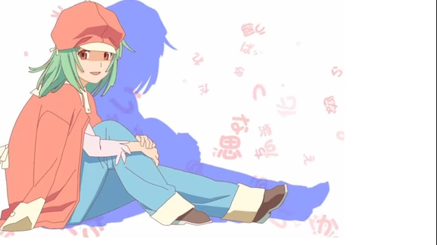

Japanese Music
Japanese Pop Music
Japanese pop music known for its catchy melodies, creative production, and diverse styles. J-pop blends traditional Japanese musical elements with modern genres, creating a unique and energetic sound that has captivated audiences worldwide.
Test Me
Chanmina
A bold and confident track showcasing Chanmina's unique hip-hop influenced style. With her powerful rap delivery and catchy hooks, this song challenges listeners with its assertive energy and modern urban sound.

Flyday Chinatown
Yasuha
An infectious city-pop inspired track that captures the vibrant nightlife atmosphere. With its groovy basslines and retro-modern production, this song transports you to neon-lit streets full of excitement and possibility.

Summertime
Rizky Ayuba
A breezy, feel-good anthem perfect for warm days and good vibes. The laid-back melody and cheerful production evoke memories of carefree summer days, making it an instant mood-lifter.

Renai Circulation
Kana Hanazawa
An adorably upbeat love song with an impossibly catchy melody. Known for its cute, bubbly energy and playful lyrics, this anime classic has become a beloved J-pop icon that never fails to bring smiles.